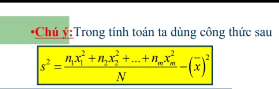
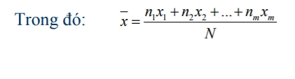

Phương sai và độ lệch chuẩn
Bài toán mở đầu
Bài toán: Quan sát điểm toán của 2 bạn V và J trong cùng 1 tháng. Bạn V có 6 bài kiểm tra, bạn J có 4 bài kiểm tra:
Câu hỏi 1: Hãy tính trung bình cộng điểm của 2 bạn.
Câu hỏi 2: Điều đó có thể hiện học lực của hai bạn tương đương không?
Trả lời 1:
Trả lời 2:
Mặc dù điểm trung bình cộng của 2 bạn bằng nhau nhưng độ lệch giữa điểm lớn nhất và điểm nhỏ nhất của hai gấp nhau nhiều lần nên không thể khắng định hai bạn có lực học tương đương.
Khi đó ta xuất hiện độ lệch.
Để tính độ lệch so với số trung bình cộng ta nghĩ đến việc tính trung bình cộng của trị tuyệt đối các hiệu của số liệu với số trung bình cộng.
Nhưng để thuận tiện trong tính toán người ta dùng bình phương trị tuyệt đối của độ lệch rồi lấy trung bình cộng của chúng.
Đại lượng đó là phương sai.
Độ lệch chuẩn là lấy căn bậc hai của phương sai (đo mức độ phân tán của một tập dữ liệu đã được lập thành bảng tần số).
Ý nghĩa
- Khi có hai dãy số liệu thống kê có cùng đơn vị đo và có số trung bình cộng bằng nhau hoặc xấp xỉ nhau thì việc đánh giá hai nhóm được dựa vào phương sai và độ lệch chuẩn.
- Nếu phương sai (độ lệch chuẩn) của dãy nào nhỏ hơn thì dãy đó có mức độ so với số trung bình cộng ít hơn.
- Công thức tính phương sai và độ lệch chuẩn:
- Chú ý trong tính toán ta dùng công thức sau:  
Các dạng bài tập
- Cho bảng thống kê, tính phương sai và độ lệch chuẩn